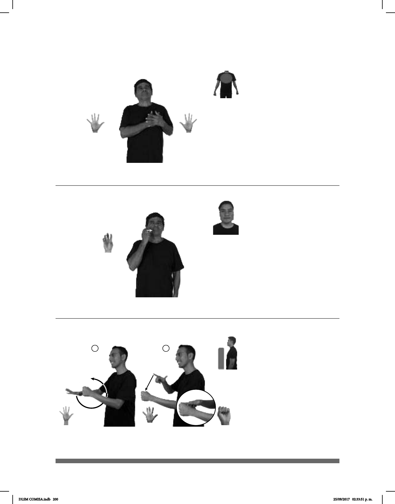

200
Seña: SB
MD y MB 5.1
MD y MB palmas
hacia adentro.
Sobre el pecho del lado
izquierdo. MD sobre MB.
1. v. tr. Sentir amor por
alguien o por algo. 2. sust. m.
Sentimiento, deseo, impulso de
afecto, ternura y solidaridad por
alguien.
(5-G 22)
1
2
(5-G 23)
1
2
pro-YO pro-TI AMAR
Te amo.
Seña: SM
5.9
Palma hacia adentro.
A la altura de la mejilla.
La mano golpea la
mejilla en línea recta.
1. adj. Que tiene un
sabor como el de la hiel o la bilis,
particularmente si produce en el
gusto una sensación desagradable. 2.
adj. Persona que guarda algún
resentimiento por frustraciones o
disgustos.
Seña: SB
MD seña que pasa de
5.1 a L.1, MB S.1
MD palma hacia abajo.
MB palma hacia la derecha.
MD y MB a la altura del
abdomen.
La MD se mueve
formando un círculo hacia atrás y
después golpea la MB en línea recta.
sust. m. Ser orgánico que
vive, siente y se mueve por propio
impulso.
_¡ !_
ESE PROFESOR SIEMPRE AMARGADO ESO FEO
Ese profesor siempre está amargado, ¡qué feo!
(5-G 24)
__muy_
ANIMAL DIFERENTES++ BONITO VERDAD
Los animales son muy bonitos en verdad.
DLSM COMISA.indb 200 25/09/2017 02:33:51 p. m.